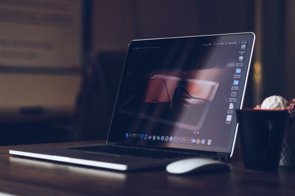

About Us

A laptop, laptop computer, or notebook computer is a small, portable personal computer (PC)
with a screen and alphanumeric keyboard. These typically have a clam shell form factor with
the screen mounted on the inside of the upper lid and the keyboard on the inside of the lower lid,
although 2-in-1 PCs with a detachable keyboard are often marketed as laptops or as having a
laptop mode. Laptops are folded shut for transportation, and thus are suitable for mobile use.[1]
Its name comes from lap, as it was deemed practical to be placed on a person's lap when being used.
Today, laptops are used in a variety of settings,
such as at work, in education, for playing games, web browsing, for personal multimedia, and general home computer use.
As of 2021, in American English, the terms 'laptop computer' and 'notebook computer' are used interchangeably;[2] in other dialects of English one or the other may be preferred. Although the terms 'notebook computers' or 'notebooks' originally referred to a specific size of laptop (originally smaller and lighter than mainstream laptops of the time),[3] the terms have come to mean the same thing and notebook no longer refers to any specific size
As of 2021, in American English, the terms 'laptop computer' and 'notebook computer' are used interchangeably;[2] in other dialects of English one or the other may be preferred. Although the terms 'notebook computers' or 'notebooks' originally referred to a specific size of laptop (originally smaller and lighter than mainstream laptops of the time),[3] the terms have come to mean the same thing and notebook no longer refers to any specific size
- Budget Friendly
- Easy to carry
- Anywhere, anytime and secure access